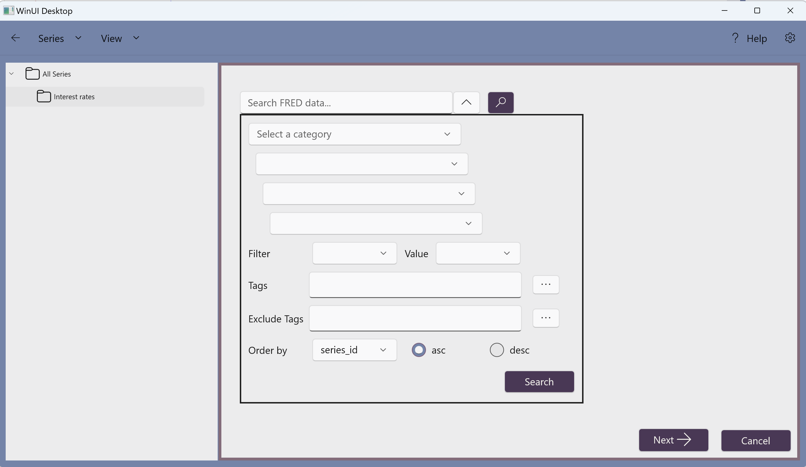
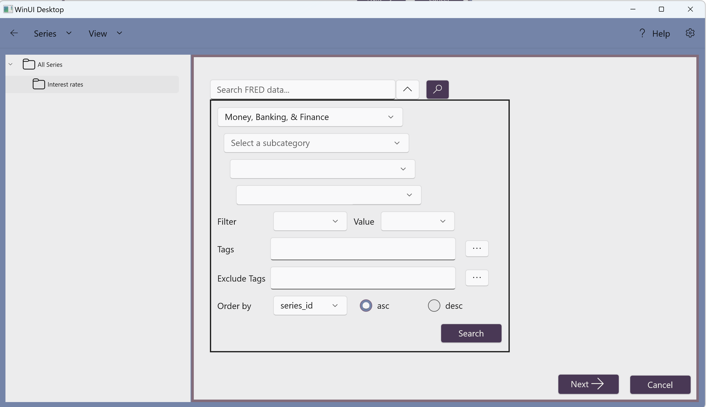
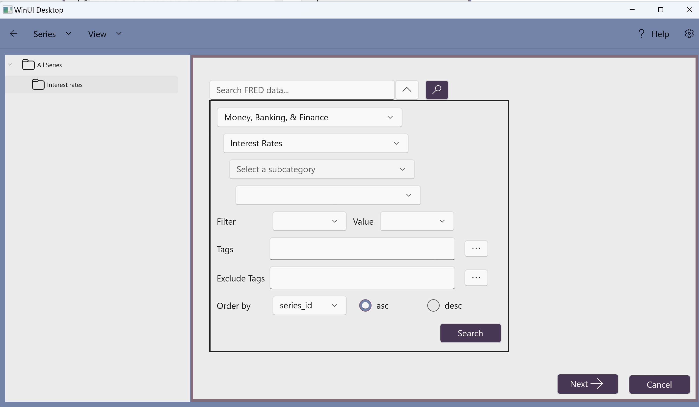

1. Right click on the root folder "All Series", select "New", then "Folder",
2. Enter a new folder name

3. Click the button to save the new folder (or to cancel)
1. Right click on the folder "Interest rates", select "Import", then "Federal Reserve Bank of St Louis - FRED",

2. Click the down arrow besides the search box to show more search options.








1. Right click on a series name and choose "Export",
2. Select a location to export the CSV file, and click "Save",
1. Right click on the folder "Interest rates", and choose "Reload",